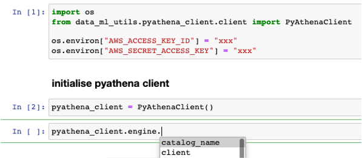

Pyathena client¶
The pyathena client class initialises an pyathena connection, and also has the ability to query results returning as pandas dataframe, drop athena tables and create athena table through schema and update the table’s missing partitions.
Environment variables¶
Before initialising the pyathena connection, we will need to define two environment variables; AWS_ACCESS_KEY_ID, AWS_SECRET_ACCESS_KEY
This can be the gandalf_dev_aws_keypair from KeyBase or your own AWS creds from ~/.aws/credentials
Defining the environment variables can be done through cli or in your .ipynb
cli
$ export AWS_ACCESS_KEY_ID=xxx
$ export AWS_SECRET_ACCESS_KEY=xxx
.ipynb
import os
os.environ["AWS_ACCESS_KEY_ID"] = "xxx"
os.environ["AWS_SECRET_ACCESS_KEY"] = "xxx"
Initialising pyathena connection¶
We will need to import the python package
from data_ml_utils.pyathena_client.client import PyAthenaClient
And then initialise the class
pyathena_client = PyAthenaClient()
You can now access the pyathena connection with pyathena_client.engine
Querying with pyathena connection¶
There is a function that will help to query your sql into a pandas dataframe
query = """
SELECT
*
FROM
reporting_metrics_dev.int_active_tradies_count__tradie
LIMIT 10
"""
df_raw = pyathena_client.query_as_pandas(final_query=query)
Drop athena table with pyathena connection¶
This function drops athena table with the pyathena connection. A successful response return 0, and 1 otherwise
pyathena_client.drop_table(
table_name="int_active_tradies_count__tradie",
database="reporting_metrics_dev"
)
Create and repair athena table with pyathena connection¶
This function creates an athena table through a defined schema, and also repair the table by adding all missing partitions A successful response return 0, and 1 otherwise
pyathena_client.create_msck_repair_table(
create_raw_query="tutorial_sql_schema/create_table_schema.sql",
repair_raw_query="tutorial_sql_schema/msck_repair_table.sql",
yaml_schema_file_path="tutorial_sql_schema/int_active_tradies_count__tradie.yaml"
)
See Pyathena API Specs for the api specifications of the above functions.